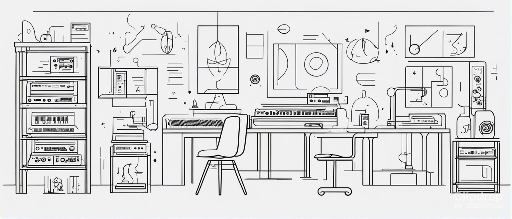

Research at the Music Cognition Lab seeks to understand the way in which human listeners and performers perceive and appreciate music. This research spans a wide range of psychological domains, from low-level processes such as auditory stream segregation to high-level musical experiences such as aesthetic appreciation. The group makes use of a wide range of research paradigms, including computational modelling, neuroimaging, and cognitive psychology.
The Music Cognition Lab is part of the School of Electronic Engineering and Computer Science (EECS), the Centre for Digital Music (C4DM), and the Cognitive Science (CogSci) Research Group, all institutions of Queen Mary University of London. The lab is led by Marcus Pearce.